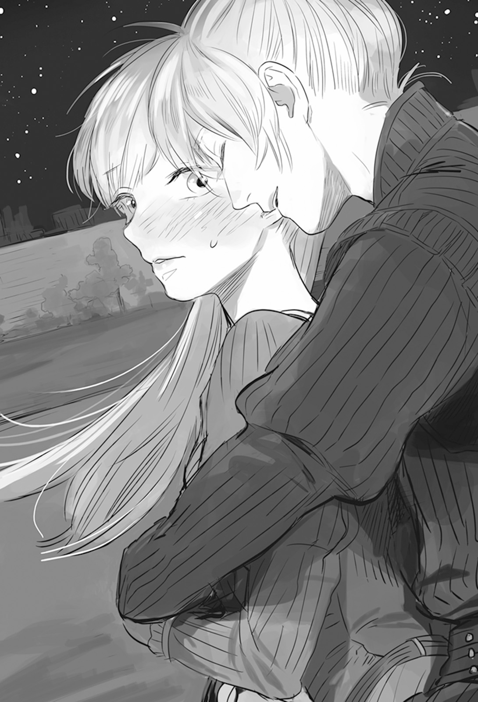

Chapter 4 – The Burning Capital
.
Part 1
The kingdom army finally arrived at the outskirt of the capital Millianna and took position three kilometers from there to surround the capital from three directions.
Among the nobles who were obeying the dukedom, there were some who felt disappointed toward the dukedom that still wouldn’t sally out even when their territory was trampled and left.
Many of the nobles who were still remaining with the dukedom including Valerie had too many things for them to feel guilty about that they couldn’t surrender to the kingdom after this late.
Even so, Millianna’s citizens and soldiers from commoner background had no obligation to share the fate of the dukedom.
Therefore, even the dukedom’s superior number that was their sole remaining advantage was something uncertain. It was doubtful how much the dukedom could count on those commoner soldiers.
However the defensive capability of Milliana’s high rampart and moat were something that even Baldr couldn’t ignore as expected.
The fact that the royal magicians that were mainly made up from nobles were still intact was also significant.
With this it became difficult for Baldr to make use of the beastman units carelessly.
They didn’t have any resistance against magic. The opponent was an army that was commanded by Olten, furthermore the battlefield was the enemy territory Millianna. It would be too dangerous to use the beastman units outside the range of their ally’s magic support.
「……The administration in Millianna is already paralyzed. I believe that the patience of the citizens is already at the limit too.」
The one who reported that while respectfully bowing toward Baldr was Baron Pieri Cerignola who had surrendered to Baldr before this.
Pieri whose court rank was relatively low had a lot of acquaintances among the intermediate level bureaucrats.
Even those people with low rank as a noble were irreplaceable existences as government officials who were in charge of the practical works.
It was said that more than half of the low ranked nobles were already starting to forsake the dukedom.
Their only worry was whether Baldr and the beastmen would demand anything unreasonable from them, but even that worry had been erased with Pieri’s guarantee to them.
「They won’t be able to hold for long. The creature called soldier instinctually hate being placed in the defensive.」
It was Ramillies who stated that.
The morale in battle was easy to increase when their side held the initiative, while the morale of the side that was on the defensive was easy to decrease.
To prevent that, optimal counterattack or hope that reinforcement would come was necessary, but it was expected that the reinforcement from answerer Kingdom would be late.
Also, half-baked counterattack might become fatal for the current dukedom army.
If it was Olten, there should be a measure that he could have taken before the war situation worsened to this degree. He hadn’t done anything like that meant that there was internal situation that made him unable to do so.
Ramillies had no intention to lose at all, but he couldn’t help but feel sympathy to his best friend who was unable to command his army as he pleased.
「Continue the secret maneuvering within their rank. There is no need to pursue those who escape from the north. However the archduke is the only one that we must never allow to get away.」
The kingdom wouldn’t be troubled at all even if the citizens or nobles ran away. That was the reason why they left one of the directions unguarded.
Even if by any chance the archduke was the very first one to escape, it wouldn’t be difficult to apprehend him with the mobility of the beastman units in the kingdom’s side.
Archduke Jack was the only one who couldn’t possible be allowed to escape to use him as a symbol that this country had been recaptured by the kingdom and also to make him take responsibility for the civil war and the massacre.
「It’s impossible for that Olten to simply sit around doing nothing while waiting for defeat. I believe that we should be on our guard.」
「Of course, there is no ruler who wish for defeat. I too don’t believe that victory will fall on our lap without needing to fight for it.」
If possible he wanted to have win after fighting fair and square.
It was a hope that any warrior held in their heart, but Baldr also understood that the possibility of that wish being granted was excessively low.
It would be difficult for the dukedom to even maintain their army if they didn’t rely on the protection of Milliana’s defense.
If the dukedom was going to attack, the only possible recourse for them was a surprise attack by few elites under Olten’s command.
But even that surprise attack would be very difficult to pass through the beastman’s extremely excellent sense of hearing and smell.
「The only remaining concern is what kind of action Europa Church will take……」
The rocket arrows and the mysterious tube that Martell used. If those things were the church’s secret technology, they would become an even more terrifying enemy than the dukedom and Answerer Kingdom.
Especially the mysterious tube. It seemed to be created from a technology that even Masaharu couldn’t comprehend. Of course it was also different from the technology and magic that existed in this continent.
In other words, the possibility that it was a technology of a completely different civilization was high.
Baldr’s was ceaselessly worried with the question of what kind of group the Europa Church was.
.
Part 2
The moonlight shined down. The huge rampart of Millianna and the moat that was filled with water and darkness were emerging in sharp relief under it.
In the past this city was extolled as an impregnable fortress due to its abundant water source just like Mauricia’s capital Cameron.
Also, the townscape that was making use of plaster abundantly made the capital got called as “The White Millianna”. It was counted as one of the most beautiful cities in the continent.
It was only at this point that Silk was feeling deeply moved that she had finally arrived at the birthplace where her mother was born.
「……Even though I so desperately wanted to come here like that」
Right now she wasn’t driven by a sense of urgency that was like an obsession like before anymore.
When she was still a kid, her mother’s hand that had thinned down until only skin and bone were left tightly grasped her wrist with a pale complexion that was almost white.
「Please, save my homeland, the beautiful Trystovy!」
Even though she was already at the death’s door, her mother’s thin hand left a bruise on Silk’s wrist that wouldn’t vanish for a week.
Since then, Silk thought of Trystovy’s liberation as the objective of her life──yes, that was until she met Baldr.
When she first met him, she felt a longing to his strength, wondering if perhaps he would be able to make up for her weakness that she just couldn’t get rid of like she wished.
Even though he was younger than her, he continued to jump up the steps and raised achievements. He immediately became a baron, an ambassador to Sanjuan Kingdom, and then he became Viscount Antrim. She even felt envious toward Baldr’s success story.
She also wanted to be strong like Baldr. No, surely she too had such strength.
She was encouraged by Baldr who made the impossible possible and it made her felt that her dearest wish was finally starting to move.
But at the same time that was also a decisive divide that separated Silk and Baldr.
She wondered when did it start, that she became conscious of Baldr.
Many times she thought that she had to give it up.
That her feeling to Baldr was a hindrance for her to accomplish her objective.
She asked herself whether it was an objective that she could simply give up just for the sake of a single man.
There was a part of herself that gradually became more attracted to Baldr the stronger those thoughts occupied her mind.
She also felt a really immature jealousy.
When she tried recalling it, she became so embarrassed that it felt like fire would burst out from her face.
Right now such her was Baldr’s fiancée and standing in front of Millianna.
「……This too is all thanks to Baldr.」
「That’s wrong.」
「──Eh?」
She turned around and saw Baldr sporting a mischievous smile standing there. Silk’s face turned red and her mind was bewildered.

「S-s-s-s-s-si, since when you are there? Or rather, you were watching me?」
「Silk is here because Silk has been doing your best until now.」
Baldr hugged the flustered Silk from behind and placed his face near her neck.
Silk could feel Baldr’s breath from right nearby. It felt like her skin became one hundred times more sensitive than usual.
As expected from Ignis’s son.
「When we first met, I thought you are like a really pretty glasswork with extremely tense atmosphere.」
Silk was an aloof existence when they first met in the knight academy.
.
「I vaguely felt a feeling of familiarity with you that made me unable to leave you alone. When I learned that we are actually cousin, I thought that’s the cause, because we are related by blood.」
It was just like Maggot guessed with her wild instinct. Silk wasn’t a complete stranger for them.
「Before I knew it I got a territory pushed on me. Then I got dragged into war……I was happy that Silk came to save me.」
In that second Antrim war, Baldr’s life would surely be gone if Marquis Randolph’s army came just slightly later.
「I thought that it’s some kind of a joke that I’m a prince of Trystovy, but Silk, you don’t think of me as a nuisance, you instead chose to stay at my side forever──」
Until that time, Silk was the one closest to the throne of Trystovy.
Someone like Baldr who suddenly appeared out of nowhere and also descended from beastman’s bloodline should be considered as a nuisance from the perspective of those with ambition.
Even so, Silk chose to entrust her dream to Baldr and lived together with him.
Baldr’s hand gently touched Silk’s chin and he lightly pushed so that her face turned toward him. He stared fixedly into her marine blue eyes.
Silk was losing her head. Had Baldr ever approached her this intimately before, no never──.
「A classmate in the knight academy became a hero in war, and he is actually a prince, a cousin, and now the two of us are looking up at Millianna’s wall together.」
If the timing of the two of them didn’t match just for a little, this reality wouldn’t happen. This was a miraculous happening.
「……It’s really mysterious.」
「I don’t think that this is a coincidence. Including how the two of us are trying to take back Trystovy together like this. And also how I love you Silk.」
「Fueh?」
Silk’s shoulders jerked at that unexpected love confession.
There was already an occasion where Baldr spoke of his affection for her, but this was the first time he told her 「I love you」.
「It’s fate that the two of us met. Don’t you think so?」
「Yes……」
Both of them closed their eyes and their silhouettes became one.
Sweet breaths were exchanged and the beating of their heart was fastening. At the same time Baldr felt grateful that Ignis’s instruction wasn’t wrong.
(──Thank you Otou-san!)
Perhaps the gene of “Camero’s Red Stallion” was stronger in Baldr even more than the gene of Maggot’s Trystovy royal family.
.
Part 3
「Do something about that quickly!」
Archduke Jack’s patience had crumbled first before the defense of Millianna.
The kingdom army was constructing simple encampment with sandbags and canals. They also let out battle cries morning and night to threaten the capital. But they didn’t do anything proactive other than that.
Because of that, although there wasn’t any direct damage, there was no way the morale on their side could increase seeing the nobles abandoning the commoners and running away.
With the high possibility that the army that was only barely under his control could switch side to the kingdom’s side just from a slight provocation, Olten was unable to move his army aggressively.
However.
The archduke who wouldn’t allow the army to march out until now finally allow it after being placed under the enemy’s pressure.
「That’s reckless. We should do it before the enemy arrived at this Millianna, or at the very least before the enemy finished constructing that encampment if we are going to do something like that.」
「Manage it somehow! Why do you think I appoint you to the post of great general if not for this!」
「Please calm down your majesty. If we carelessly march out and get defeated, then the only future remaining for the dukedom will only be destruction!」
Even now the morale of the army was only being barely maintained.
If they got defeated wretchedly once more, even with Olten’s skill there would be nothing he could do to prevent the commoners from turning their back completely on the dukedom. He couldn’t become emotional and placed his bet on a low chance of victory.
The archduke would be temporarily convinced after he gave that explanation, but then his mind would become unstable once more when he got woken up late at night by the kingdom army’s war cry, and then he would start yelling at Olten again.
(This can’t last any longer……)
Olten sensed that the archduke’s mind was going to reach the limit.
Originally the archduke wasn’t this kind of person.
In the past Olten too judged that the archduke was someone worthy for him to offer his loyalty to.
The archduke wasn’t simply trying to protect the interests of the nobles.
He was trying to protect this country.
The nobles weren’t simply the ruling class, they were also shouldering the role as the administrative official and also the judge. This country would be able to last if the nobles were discarded just because the commoners had risen to prominence.
If the archduke didn’t become the leader of the revolt and the nobles chaotically carried out the revolt on their own, at this time the country called Trystovy would already got occupied by other countries split up among them.
The archduke’s revolt reformed the distortion in the power balance between noble and commoner to lean toward the noble, however it didn’t mean that he was simply oppressing the commoners.
That was exactly why the dukedom was able to maintain a relatively good government and cornered the maritime guild until there was just one more step left before they were defeated.
If only Baldr didn’t appear──.
Even the son that the archduke put his hope into had departed earlier than him. His longtime friend Marquis Fiorentina also betrayed him.
Perhaps because of that, recently the archduke’s appearance had noticeably aged. But there was already no one else who could replace him at this point.
Olten knew that sometimes old man could become unbelievably foolish and obstinate.
He should take some kind of action while the archduke could still control his emotion.
But in his position, there was no way that Olten could make a gamble in desperation.
「……Great general-dono.」
「Isn’t this your excellency the prime minister.」
The only good news at this bleak situation was that Valerie had returned with news that Europa Church would provide them with support.
There was a problem of how they would receive that support while being surrounded like this. However it was a great difference between having a hope of support and not having any hope at all.
If they could borrow the strength of the church and Answerer Kingdom, then pushing back the kingdom also wouldn’t be an unreachable dream.
Besides with Valerie’s return, the archduke’s derangement could also be contained to the minimum. It was frustrating but, the archduke’s trust to Valerie was higher than his trust to Olten.
「My apologies to expose my incompetence like this but, his majesty’s patience won’t hold for even one more week. Can I ask whether great general-dono has some kind of secret plan to win this war?」
「As expected even I can’t possible create something from nothing. You should laugh at me instead for being an incompetent old man.」
「It won’t create anything productive even if we old men are grumbling at each other. I have tried crushing all the disquieting elements in this city, but the number of nobles trying to run away keeps increasing. At this rate ──」
Even with the prime minister’s shrewdness, it was difficult to completely prevent the noble from harboring disaffection toward the dukedom.
The escape of the many nobles left a great hole in the government. It was Valerie alone who prevented that hole to grow any bigger and destroy the whole thing.
Olten didn’t know what this person was thinking deep inside, but his talent was the only thing that he didn’t hold the slightest doubt to.
If this man said that this was the limit, then it was undoubtedly true.
「Can’t we hold on until the support from the church arrive?」
「Certainly the relic that is in the possession of the church has tremendous power, but it’s not unbeatable. Besides, the enemy also possess similar weapon. It can’t act as our trump card.」
In fact, the rocket arrows that were provided to the dukedom were far from being a trump card with how limited their number and might were.
Even if the church provided them with new relics, it was hard to think that the whole war situation could be overturned with just that.
「──To put it simple, all the problems will be solved as long as that crown prince is killed. In order to do that, it doesn’t matter even if this capital fall to the enemy’s hand.」
「It will be the end if we lose you know?」
「The result will be the same if things keep continuing like this. The only thing that we can do is only to make a gamble with the best possible odd available, isn’t that correct?」
Olten felt the graveness of the situation dawning clearly on him once more when Valerie told him that.
As expected, simply understanding something and expressing it out loud with words were different things.
Until recently, he had never even dreamed that the dukedom that should be known as one of the major countries was in the verge of destruction right at this moment.
When Olten thought of it like that, a rage that surprised even himself was welling up from inside him.
(I’ll never accept that!)
He twisted his principle as knight and betrayed the kingdom to establish the dukedom.
This dukedom was truly the result of Olten’s whole life. It was what he staked his life for until now to build. He could never allow the crystallization of his life to be denied.
Even if his opponent was Ramillies, he would never yield no matter what.
Valerie sensed Olten’s fighting spirit and muttered the decisive words as though he was talking to himself.
「One of the emergency escape routes for his majesty the archduke is through the statue of the country’s founder……」
「Your excellency! That’s……」
If the kingdom army headed toward the palace, they definitely would have to pass through the central park. There was the status of the country’s founder at the back of the place.
It was the best place to launch a surprise attack with a lot soldiers.
But, was it alright for a mere vassal to make use of one of his lord’s escape routes as he pleased? In the first place, was it alright for Valerie to expose its location like that?
(──As I thought, this man cannot be trusted!)
Allowing his lord to be at risk of danger if it was for the sake of winning, that wasn’t something that a vassal should ever do.
Once more Olten realized that Valerie’s loyalty didn’t lie with the archduke at all.
「I’m not in the age to feel any reluctance of dying anymore. I shall accept it even if I’m judged to be irreverent to his majesty and executed. However it will be impossible to even judge me if the dukedom is destroyed.」
Certainly that might be the case.
And yet it was still a different matter whether he could approve of it or not.
To say nothing of how Olten couldn’t believe Valerie right now, so he hesitated even more.
However the next sentence brought down the sturdy wall in Olten’s heart.
「You see, I want to carry on with my obstinacy. I at least want to die believing that my life until now isn’t pointless.」
Valerie didn’t say a single lie in his words.
That was exactly why Olten felt a sympathy because what Valerie was thinking was exactly the same with him.
Although the dream that Valerie had staked his life for was the complete opposite of what Olten believed in.
「Someone of my station can’t approve your excellency’s act just now no matter what. However, I can at least understand your motive.」
His lips loosened on their own.
It would be a shame for a warrior to not fight when they should fight even though their heart had decided.
「I will definitely deliver the information to great general-dono using all the men in my disposal. Then I’ll leave the rest to you.」
With the strength of the intelligence group under Caulila’s command, determining Baldr’s location wouldn’t be that difficult.
But Baldr wasn’t that weak of an opponent that he could be defeated in a battle with just that.
「I shall accept your excellency’s trust gratefully. I too have an obstinacy that I wish to persist in, an oath that I have to kept no matter what, and a promise with a friend that has to be fulfilled.」
Olten was liberated from the worry that had been tormenting his mind all this time even if only for this moment. His innate cheerfulness and resoluteness came back to him.
As expected, a warrior shined the brightest when they were faced with a battle.
「May the fortunes of war be with you.」
Now then, he had to make arrangement so that things didn’t go too far.
Valerie was planning to give Olten his full cooperation, but as the scriptwriter he believed that he had the right to make use of the result.
.
There was a change in the war situation two days after that.
The archduke had reached the limit of his patience far earlier than Valerie predicted. He ordered Olten to march out.
The enemy soldiers were continuously raising war cry that touched the nerve days and nights. It wasn’t just the archduke who got affected, the soldiers and citizens were also greatly fatigued.
The soldiers of the dukedom were also ordered to raise their war cry to oppose the enemy, but the speed of the fatigue’s increase was different between the side that held the initiative and the side that didn’t.
「──Aim the rocket arrow and prepare to fire!」
「Preparation complete!」
「We’re going out! Show them the dukedom army’s might!」
「OOOOOOOOOOOOOOOOO!」
The solidly closed gate was opened with the heavy cavalry unit under Olten’s command at the forefront.
The decision of the dukedom to launch an attack despite being in disadvantage had unfortunately been seen through by Baldr since a long time ago.
Starting from Baron Pieri Cerignola, there were a lot of collaborators of the kingdom within Millianna. The private companies that had dealings with Augusto were also sending a lot of information to them.
The citizens of the capitals were levied with great amount of war time tax, and yet the government service had completely stopped functioning and paperwork that didn’t get processed kept piling up into a huge mound.
Everyone was starting to turn their back toward the dukedom that was in such state.
Putting aside whether there was a chance of victory or not, perhaps choosing to hold the decisive battle at this timing could be said as a resolute measure.
.
「Absolutely don’t allow even a single scratch to land on our beast king!」
Gitze allowed Baldr to be heavily wounded in the previous battle due to Mikhail and Martell. Because of that he was looking for a chance to redeem the honor of the dog-eared race.
For him, the dramatic victory in that night battle couldn’t satisfy his desire for fame at the slightest.
The fact that he allowed the beast king Baldr to wander between the line of life and death was a great enough blunder to cancel out the worth of the victory.
In addition the cat-eared tribe from Gartlake had arrived as reinforcement. The other day they had raised achievement of defeating Count Moretti and General Sylva.
They mustn’t allow Nordland’s dog-eared tribe to be looked down at no matter what.
Gitze was awaiting the dukedom army’s charge gleefully.
「Those bastards! Don’t allow the dog-eared tribe to hog all the good parts!」
「You guys! Follow me nya!」
The beastman units were moving to run through the dukedom army from both wings with a high morale that pierced the heaven. Then rocket arrows landed in front of them as though they had been waiting for that.
「T-this is……」
「My nose……my nose hurts!」
「Achoo! Achoo!」
The beastman units were writhing while covering their nose because their sharp sense of smell was stimulated excessively. The dukedom army continued charging while sending sidelong glance toward them.
「Don’t think that we will keep not having any measure against you animals forever!」
Olten cut down one of the beastmen with his sword while sporting a satisfied smile.
He finally managed to get a payback from the beastman units that had continuously defeated the dukedom army and gave them a hard time.
However that was as far as he was able to get carried away.
Flamethrower showered them with flame from close range. Dozens of soldiers were burned to ash by hell fire.
「Don’t falter! The number of the weapons and their power are nothing to fear!」
The flamethrower had showy effect, even so the distance it could shoot fire was actually short and the range was also narrow.
If one was prepared to face it since the start, those who got killed by the weapons could be simply considered as necessary sacrificew.
Olten’s spirit inspired the dukedom army and they continued to charge through the flamethrowers.
「──War isn’t so soft that you can win with just spirit you know.]
It was a splendid fighting spirit that could make anyone opened their eyes in amazement, seeing that such spirit was coming from the dukedom army that had done nothing but focusing in passive defensive battle until yesterday.
But, the kingdom army wasn’t so weak that they could win with just that.
That was even truer when the command of the main formation was being held by Ramillies.
「FIREEEEEEEEEEEEE!」
Crossbow’s arrows rained down on the vanguard of the dukedom army that broke through the flame and black smoke.
One of the arrows deeply pierced Olten’s chest as though fate was guiding it to that spot.
「Uguh!」
Olten almost fell from his horse due to the impact, but he barely held on. Then after hesitating a little, he turned around with a heavy heart.
「Don’t let him get away!」
A warrior who had the heaven on his side wouldn’t be hit by arrow this easily.
For example generals like Gamou Ujisato or Kuroda Nagamasa, they continued to lead their army at the forefront even at the closing years of the Warring States era when gun had been developed. Even then they didn’t receive any wound that was worth mentioning.
Conversely there were generals like Mori Nagayoshi who had the nickname of Oni Musashi and some other generals who got hit right between the forehead by coincidence and died instantly.
Many military commanders were a superstitious lot who put great importance on their religious faith because they knew that such luck couldn’t be underestimated in battlefield.
──The will of heaven isn’t on my side.
Olten immediately decided to retreat the moment he realized that.
Of course there was no way Ramillies would allow him to do that without doing anything.
「Stay hot on their heels! Don’t let them get away no matter what! We’re going to charge right into Millianna!」
Antrim army and Randolph army charged as though they were switching place with the beastman units that were still writhing in pain.
The rocket arrows impacted once more with a thunderous roar, but the kingdom army stayed hot on the heels of the dukedom army without allowing them to widen the distance no matter what.
They were pursuing the enemy that marched out from their castle to take advantage of it to invade into the castle in one go.
That was what Ramillies was trying to do.
It was worrying that the cat-eared tribe that could display immense strength in battle inside castle had temporarily become unable to fight, but there was no way they could leisurely wait for them to recover.
「Advance! Advance!」
The kingdom army left behind Gitze and Satsuki while pursuing the rear of the dukedom army that was losing its order. They didn’t stop there, the kingdom army even swallowed the enemy and finally they accomplished the invasion into Millianna.
「Their reaction is too lacking.」
Baldr also personally wielded his sword and passed through Millianna’s gate. He looked around in suspicion.
Tactically, this decision should be the most valid.
Following the retreating enemy to charge right into the castle was one of the methods with the fewest casualty to conquer a castle.
When the beastman units were neutralized, Baldr thought that even the main formation might be threatened in the worst case.
And if all those were also to intentionally lure them into the castle like this, then he could only call the enemy’s tactic as magnificent.
「If it’s a trap then I’ll just need to tear it apart.」
The enemy had intentionally allowed them inside, so there would be extremely great reward waiting if they could defeat the trap.
There would be nothing better if he could settle this war in a short time before unnecessary reinforcement from other country was intervening.
The best good opportunity could be found at nowhere else than in the middle of dangerous predicament. That was a very obvious truth in the battlefield.
After entering the streets of Millianna, naturally a large army wouldn’t have any space to be able to move freely.
Even the biggest street in this city could only have thirty soldiers at most walking through it side by side. Naturally the kingdom army had to split up to move along multiple main roads.
It was painful that the cat-eared tribe still hadn’t managed to recover to participate in this battlefield where the open space was limited and there were many places to move three dimensionally.
In addition there were watchtowers that were set up at the roads’ important positions. The magicians were raining down their magic on the kingdom army from there.
「──Don’t get in my way.]
The kingdom army was overwhelmingly inferior in the field of magic, but here the dukedom’s side was made to learn that the kingdom had an existence that was even more unfair than magic.
「URYAAAAAAAAAAAAAAAAAA!」
Baldr threw his spear with brute strength. It became a bullet that was accompanied with the shockwave of subsonic speed. The magicians were reduced into meat chunks together with the watchtower.

At the same time one more shadow soundlessly rushed toward the watchtower and passed through beside a magician like the cold wintry wind that blew in autumn.
The magician was cleanly split into three and a lot of blood spurted out. The magician died instantly without even knowing what had happened to him.
「Good grief……to get caught in a trap of that level. I still can’t feel reassured to completely leave Baldr to that cat girl(Satsuki).」
Grandma is strong. She was at a different level than Satsuki who was still covered in tears and snot right now.
「N-no good……who can fight against that kind of monster!」
「Ididot! Don’t run away! There is no more place anywhere for us to run away to!」
The dukedom was just barely able to continue to fight. However that was only because they were fighting an urban warfare with confined battle area. It was only a problem of time until their morale crumbled.
The center army formation that was accompanied by two King’s Gate owners arrived first to the central park’s square in front of the palace.
──It was then.
The remaining rocket arrows were fired and not a few soldiers of the kingdom army were blown away.
「Don’t waste time with anyone else! Just focus on taking the crown prince’s head!」
The elites of the dukedom army under the command of Olten rushed out from behind the status of the country’s founder.
It was all or nothing.
This was exactly the time, the moment that Olten had been waiting for all this time.
The beastman units had been temporarily neutralized. And if only the number of soldiers at the central park was counted, then both sides were equal.
Most of all Olten wasn’t leading common soldiers whose loyalty was wavering, but elites who he could entrust his back to.
The terrain was also favoring the dukedom army. This was the best place they could launch this kind of ambush.
That was why in order to lure Baldr until this place without fail, he had prepared a body double that looked really similar with him to lead the charge outside the castle.
His target was Baldr alone.
There was a need to lure Baldr until inside Millianna without any beastman accompanying him as his guard.
The only problem left was──.
「That was an unconvincing fake, Olten.」
「I thought that you would surely see through it if it’s you.」
「You aren’t a man who would allow yourself to be hit by arrow that easily.」
Ramillies was his irreplaceable best friend who he had parted with in the past. He was the only one who wouldn’t get deceived by such trick.
「But it’s just as I expected, you didn’t stop the crown prince!」
Even so Olten judged that he could win.
Baldr and Ramillies were good master and servant. They trusted each other’s strength without any doubt.
That was why it would be worthwhile to defeat them!
「Don’t think that I come here without any preparation at all!」
Olten raised his right hand. At the same time fires simultaneously broke out everywhere in the city.
Even if he had to burn the capital Millianna, it would be a cheap price if he could obtain Baldr’s head with that.
The kingdom army that wasn’t familiar with the geography of Millianna would be split up even further by this fire.
This splendid management of setting the fire was carried out by Valerie’s intelligence unit that was led by Caulila.
「Tsk! Again huh-!」
Baldr and Gina felt the mysterious fatigue that Baldr also felt when fighting Mikhail. They sensed that their King’s Gate was sealed.
The relic that was supplied by the church was reliably taking away the strength of King’s Gate.
Then what was left was only to fight head on, strength against strength!
「The destiny of the dukedom will be decided in this battle! All of you, don’t think of surviving! Die here for the sake of the dukedom’s future!」
「OOOOOOOOOOOOOOOOOOOOOOOOOOH!」
Since Baldr visited Trystovy, this might be the first time that the dukedom army’s morale surpassed the kingdom army.
The elites of the dukedom who were resolved to die greatly pushed back the kingdom army that had the same number.
「Don’t falter! On our honor as the army of Marquis Randolph, we won’t take even a single step back!」
The one that fought the hardest as Baldr’s shield was Randolph army under the command of Silk.
Since the war started, they had never raised any conspicuous achievement. Here was the moment where they stood their ground and risked their life.
In addition, it was also Randolph army that harbored the most deeply-rooted anger toward the dukedom.
Olten was eluding that firm defense with his superb tactic and approached Baldr little by little like water that was permeating the ground.
This was due to the difference in experience as commander between Silk and Olten that was really hard for Silk to do anything against it.
── Just a bit more.
Olten laughed heartily when he saw the person who was standing imposingly in the middle of the last line of defense.
「As I thought, you are the last one huh.」
「That’s right. You won’t be able to lay even a single finger on his highness as long as you haven’t defeated me.」
His best friend and also rival. His sworn enemy.
The two old generals crossed swords while holding feelings that were too complicated to be expressed in words.
Memories of the old days flowed in the back of the two’s minds within the short time that only lasted for an instant.
Their time in the knight academy when they fought each other as rival for the top seat.
Their time as young knights who shared naïve anger toward the reality of the kingdom that wouldn’t go as they liked.
The impetus that caused the path of the two to diverge from each other started when Ramillies got his life saved by Viktor in the battlefield and he served him as his lord.
If Ramillies didn’t meet Viktor and remained in the military, would the future of the dukedom change?
Either way, the two of them had to deny their best friend in order to affirm their own life and advanced forward.
「The record of our duels until now should be 34 wins and 33 loses in my favor huh?」
「Liar. It’s 34 wins and 33 loses in my favor.」
「Then」
「Let’s proof which one of is correct with this sword!」
It was a short encounter that didn’t even last for several seconds. Just from that these long time friends stepped forward while sharing complete understanding about each other.
Olten was slightly faster.
However Olten had gotten promoted to high position and left the frontline even if he was still keeping his training after that. Ramillies who had traversed many battlefields as mercenary was superior in tactic.
Ramillies blocked Olten’s heavy slash and repelled it, then next he switched into offense.
His attacks were like a surging wave that also included punch and kick. Olten was immediately getting pushed back.
「Not bad Ramillies.」
「Where is your sharpness from the past Olten!」
They were fearlessly laughing at each other as though they had returned to their younger days when they were still at their twenty.
When was the last time they were feeling this fulfilled? Why were the two of them walked a path that was far away from the other even though their heart was connected so closely like this?
The two of them possessed equal talent and equal skill. They knew each other in personality and habit completely as though they were the other half of the other. But now they were trying to kill each other with their ideal and life on the line. And yet, they couldn’t help but felt helplessly delighted.
The break in the equilibrium came so suddenly.
「Broken!」
Olten knew that Ramillies specialized in using his right foot as axis to launch a combo with high rotation.
To block that, he also put his strength into his pivot leg to push back the rotation when it was still at the early stage.
And yet the ground sunk under Olten’s pivot leg when he put his strength into it.
Olten leaped back to fix his stance, but at that time Ramillies’s arm already twined around Olten’s pivot leg.
──Grappling technique HIza Karame(Knee Entangling)
It was the technique that baldr used against Ramillies when they first fought.
Olten didn’t have any new knowledge, while Ramillies had new knowledge that couldn’t be found in this world.
That difference appeared as a lethal difference between the two.
Ramillies’s sword was swung down toward the chest of Olten who was falling.
Olten reflexively blocked it with the flat of his sword, but Ramillies’s sword that was backed by his body weight deeply stabbed until halfway into Olten’s chest along with his sword.
「Gahah!」
A lot of blood was vomited out from Olten’s mouth.
Anyone who saw the wound would know that it was lethal.
「……So it’s 34 wins and 34 loses with this huh.」
「I’m telling you, it’s 35 wins and 33 loses. Don’t go back on your promise.」
「Promise huh……do you remember? About our promise.」
「There is no way I’ll forget isn’t it?」
When they graduated from the knight academy and got appointed to be knight, the two of them swore that they would definitely become magnificent knight whose name got engraved in Trystovy Kingdom.
「I wonder where did I go the wrong way.」
「Since you shouldered responsibility that a knight shouldn’t shoulder. That was because you are too good natured.」
If only he could stay as a mere knight──.
Olten surely wouldn’t be here at this time.
Because he grieved for the future of the country and he also possessed the ability and will to shoulder the responsibility to maintain and develop the military, Olten was forced to commit betrayal.
This world was too unreasonable for Olten to live as a mere knight.
「Sorry. I entrust the oath that I couldn’t fulfill to you.」
「Farewell, my friend.」
Under the watch of his best friend Ramillies, the great general of the dukedom Olten closed the curtain of his long life.
.
The dukedom army fell apart with the loss of their great general.
In the first place the military was only maintained until now with Olten’s immense charisma. The soldiers immediately started to run away and many were surrendering everywhere on the streets.
Soldiers with backbones were still continuing to fight just barely, but the only resistance left that was worth noting was only the dukedom’s royal guard that was protecting the palace.
「Protect his majesty the archduke till the end!」
The royal guards were holding position at the central part of the dukedom, inside Millianna palace. They were continuing to fight the despairing situation in order to buy time for the archduke to run away.
They would sacrifice themselves for the dukedom even if there wasn’t any prospect of victory.
That was their pride as the royal guard, the elites who were placed the closest to the archduke.
The palace was divided into four quarters. It was a solid defensive facility. It was somehow possible for the royal guards to continue their resistance by using the defensive capability of this place.
「It’s already hopeless! I’m escaping from here!」
As for the archduke Jack, he had completely lost the will to fight when he heard the news of Olten’s death in battle.
The figure of Jack who resolved himself to fight till the end so that his life wouldn’t be stained even if he died couldn’t be found there.
It was said that human’s true nature would only rise to the surface when death was right before them.
The ideal of his younger day.
Revenge for his son.
The accomplishment of his life.
When the dukedom that he believed was far more important than his life was going to perish, what visited Jack was the primitive instinct of not wanting to die.
If it was now then the royal guard was still preventing the kingdom army to enter the palace.
If he was going to run away, then he could only do it now.
Jack led his close aides through the hidden door in his bedroom and walked in a hurry through the underground passage that was leading to the outside stairway.
In the past only the royal family knew about this path. Now it should be only Jack and his late son Bernardi who knew about this route. It was an escape path that was prepared in case the worst happened.
Since he inherited the knowledge of this route from the late king before he was executed, Jack had never told a soul about it other than his son.
Through here he should be able to escape to safety without the kingdom finding him.
「Is my wife still not here? All of you, split up and gather as many jewelry and gold as possible!」
Yesterday Jack was still resolved to stay in the palace and die in battle rather than allowing the dukedom to be taken away.
He hadn’t ordered anyone to make any preparation for escaping. He only summoned his wife and concubine at this last minute and assigned quite a lot of people to bring the national treasures and fortunes with them.
「A-Answerer Kingdom is going to accept us right?」
One of Jack’s aides answered him.
「They are already starting to accept the nobles that sought asylum from them. They will surely welcome your majesty the archduke warmly.」
For Answerer Kingdom that specialized in ruling other country indirectly, the existence of Jack who didn’t have any successor was a really useful pawn that they could make use of.
Even if Jack would never be able to reign over the dukedom as its ruler anymore from here on, his life would surely be guaranteed that he would never experience any inconvenience.
Even so he didn’t mind. Jack had killed his own brother and best friend. That was exactly why he feared the death that was thrust before his eyes right now more than anything else.
If it was for the sake of surviving, then he wouldn’t care at all what happened to this dukedom.
Why was he that obsessed with the dukedom to such degree?
He wanted to live. Even if just for a second longer, he wanted to experience this world.
Right now Jack’s heart was only occupied by such feeling.
「──Where are you planning to go to, your majesty?」
That voice sounded like the death god that appeared from deep underground to reap his soul.
Jack ducked his head like a child who got found out doing mischief.
As expected, Jack felt extremely guilty that he was trying to run away without even telling his long time retainer.
「T-this is, you see, Marquis Ost……」
「Didn’t your majesty say that you won’t surrender no matter what against that animal usurper of the kingdom?」
「It’s the fault of all of you for losing! This too is for the sake of not allowing this dukedom, the future of this country to fall into the hands of those animals! Right now I need to survive in order to prepare for the next battle!」
Jack obstinately insisted with that excuse even though he didn’t have the slightest fighting spirit to challenge the kingdom for another battle. He didn’t have any other way than making such excuse.
「Your skill will be necessary for the next battle lord marquis. I shall specially allow you to accompany me in my escape through the secret path.」
Jack believed that he was giving Valerie a carrot with that.
Some people said that old man would lose attachment to life as their remaining lifespan kept shortening, but that was a lie.
Old man would treasure life even more than the young people exactly because death had approached them until very near.
Naturally Valerie would also be like that. That was what Jack thought.
「Hou, the escape path that was prepared by the old royal family in case of emergency is it? Unfortunately the path to the central park can’t be used anymore.」
「──You know?」
If it was Valerie who was ruling the darkness of the dukedom, then perhaps he would have the chance to learn about it.
Jack became scared of Valerie’s immeasurable strength once more.
「We are fellow parent whose precious son was killed. Shouldn’t we live for the part of our son too in order to accomplish our goal?」
「Goal? Goal is it……」
Valerie snorted condescendingly.
Jack felt a disquieting atmosphere from Valerie’s state. He unconsciously stepped back to behind his guards.
「Know your place! I won’t forgive such insolent attitude!」
──Valerie exploded into laughter at the next moment.
「WAHAHA-HAHAHAHA- HAHAHAHAHAHAHAHAHAHAHAHAHAHAHAHAHAHAHAHAHAHAHAHAHAHAHAHAHAHAHAHAHAHAHAHAHAHAHAHAHAHAHAHAHAHAHAHAHA!」
「H-have you gone insane?」
「I’m insane! I have yielded this body to madness all this time since that day my best friend was murdered!」
*DON*, a dull sound resounded. Jack turned around in surprise. There he saw his guardian knights falling like dolls whose strings were severed.
It was the work of Caulila and his assassin squad. The knights weren’t even allowed to make any sound.
Surrounded by opponents who were radiating ferocious bloodlust, Jack’s mind was thrown into disorder and he screamed because now there wasn’t even a single ally of his here.
「You bastard……! Are you planning to betray this archduke? Even though you are the prime minister of this dukedom, have you no shame!?」
Valerie laughed even louder in front of Jack’s verbal abuse.
「You still don’t get it? Even though the great general-dono has died just as planned and the people of Millianna has also lost all affection for the dukedom due to the fires that had been set up all over the city.」
Everything went exactly like in Valerie’s script.
The army, the citizens, there was no one who would believe in the dukedom anymore.
The dukedom had already vanished completely from the heart of the people even without waiting for the dukedom to be defeated.
「I have also prepared a role for your majesty in the last rise of curtain after this. I’ll be troubled if you leave the stage as you pleased.」
.
The screams of death agony resounded inside the palace.
At this point the beastman units who left the frontline temporarily had made a comeback. Because of that even the royal guards who were maintaining the defensive line by using the defensive capability of the palace were also finally starting to crumble.
「Damn you! Against the like of mere animals like you all!」
「Nya? In that case are you lower than even animal nya?」
The royal guards were inferior in number and even their only hope that was the defensive effect of fighting indoor had been turned into disadvantage. They had no more chance of victory.
「Don’t run away! Where are you going to if you run away from here!?」
「That’s right! At the very least die with your honor intact so that you won’t stain the pride of the dukedom!」
The knights were taken down one after another. The non-combatants like the maids and government officials were running away screaming.
Even though they had never experienced it, they had enough knowledge of what kind of tragedy non-combatants like them could be dragged into as someone standing at the side of a country in the verge of destruction.
「Those who don’t wish to fight, gather at the courtyard! If you don’t comply with this instruction then we shall regard you as hostile!」
But fortunately for them the kingdom army wasn’t that bloodthirsty.
The non-combatants and those who surrender were efficiently gathered at the courtyard and restrained there. That action also doubled as prevention for the upper echelons including the archduke from running away.
Any human presence vanished from the palace. Only the knights who continued to fight were continuously getting pushed back deeper inside.
And then they got cornered into the throne room at the end.
Only twenty people managed to hold on until this far.
They resolved themselves to fight till the last with the throne behind them. Unfortunately their heroic resolve couldn’t be rewarded.
「──Gahah!」
「W-why?」
The last door opened soundlessly and the blades of the assassins waiting inside attacked them.
The royal guards never even dreamed that hey would be attacked from behind. Their back was completely defenseless and most of them died without even knowing what had just happened.
Perhaps it was a blessing for them that they died without knowing anything.
Valerie slowly showed up from the throne room. He talked to the soldiers of the kingdoms who were puzzled by the sudden falling out that happened.
「Forgive me but can I ask you gentlemen to bring me to his highness the crown prince? I have captured the archduke and wished to present him in his highness’s presence. I am the dukedom’s prime minister Valerie.」
The soldiers were hesitating of what to do even after Valerie said that. In respond Valerie laughed heartily.
「I captured the archduke when he tried to escape from the secret passage. With the caliber of his highness the crown prince, he surely won’t refuse this request for an audience out of hand.」
「P-please wait for a bit!」
A soldier hurriedly ordered his subordinate to send the message.
Even though this man was an enemy, their instinct didn’t allow them to attack, telling them that they mustn’t oppose this man.
Even though the most valuable head to raise achievements, the archduke was right before them, they didn’t dare to attack.
Although if they did something like that, the assassin squad that Caulila was leading would remove them from this world for all eternity though.
「The prime minister brought the archduke?」
Baldr frowned when heard the report.
It wasn’t rare that someone tried to switch to the winning side when their side was defeated.
However this was the prime minister of the dukedom of all people. It would be a very egoistic judgment if he thought that his status could be guaranteed just because of a betrayal at this last minute.
「──Well fine. I’ll grant him audience in the throne room.」
Any organizational resistance from the dukedom had been finished.
It was also certain that it would be troublesome if they carelessly allowed the archduke to get away.
Besides Baldr himself was interested with this person called Prime Minister Valerie.
He was the man who was said as the ruler of the dukedom’s darkness.
His information gathering ability even surpassed in one part Baldr’s information network that was using radio.
For those who were in the know of the dukedom’s internal situation, it was common knowledge that the archduke could easily usurp the country was because of Valerie’s existence in the shadow.
Baldr was genuinely curious that such mastermind was intentionally surrendering at this point.
Accompanied by Silk and Ramillies, Baldr leisurely sat down on the throne.
The throne that symbolized the ruler of this country was something historical that had been passed down even before when this country was still a kingdom until now.
Baldr let out a heavy sigh while sitting on the throne that was placed several meters high from the hall.
Even if the formal ascension still hadn’t been held, this was the moment when Baldr effectively became the sole ruler of Trystovy.
When he felt the deep feelings toward the fateful change in his life and thought of the difficulties that would come to him in the future, as expected even Baldr felt something welling up in his heart.
Although he had resolved himself , the weight of the responsibility still made him felt tired.
Silk seemed to sense what was going on inside Baldr’s heard and she placed her hand on his hand.
「──Bring them in.」
Baldr felt embarrassed of Silk’s encouragement while he waved his right hand to usher in Valerie.
Inside the throne room, the kingdom’s authorities, Baldr and Silk, Augusto and Ramillies, Gina and Satsuki and the others were all present.
These were truly the lineup who would shoulder the kingdom from here on.
The martial might of each one of them also wasn’t ordinary.
Archduke Jack was trembling while unable to even make any voice because being brought here was no different than being tossed into a cage of fierce beasts.
No matter what kind of miracle occurred, it seemed impossible that he would be able to escape alive from these people.
「──It’s truly a honor to be allowed in your presence for the first time, your highness.」
Regardless of how despairing the situation was, Valerie’s voice was sonorous. His tone even sounded cheerful.
……He had finally reached this point.
He had gone through days of suffering that felt like there would be no end of it.
His plan that he actually didn’t even know whether it really could be accomplished or not, the plan that he carried on with only his delusion and obsession sustaining him, it was finally going to come to fruition at this moment.
Valerie looked once more at Baldr’s face that he saw for the first time.
It felt like this wasn’t his first time meeting him.
It seemed that his hair and eyes were inherited from his mother, but his mild presence of someone who hadn’t lost the goodness of man even while strongly carrying an ideal was similar with his late friend(Viktor).
Just from that tears almost spilled from his eyes unconsciously. Valerie desperately held it back.
「Muuuu! Muuuu!」
Jack was also trying to yell something desperately, but no words came out due to the gag in his mouth.
He would just beg for his life even if he was allowed to talk anyway.
「I never expected that you prime minister would be the one to apprehend the archduke. Don’t you have any lingering attachment to this dukedom that you have built with much difficulty?」
Valerie easygoingly fended off Baldr’s sarcasm.
「One can only hold on lingering attachment only because there is still possibility available. Human can’t hold a lingering attachment toward something that they have lost completely.」
Strictly speaking he wasn’t losing anything here because he was the one throwing it away.
The dukedom’s revival was already impossible no matter how things developed. Therefore it was impossible to hold any lingering attachment to the dukedom.
「I see. However I don’t think that your future will be bright just because you don’t have any lingering attachment. Have you considered that point?」
Baldr was implicitly saying that he wouldn’t allow Valerie to switch side from the dukedom to the kingdom.
「Of course I don’t come here with the intention of pleading for my life at this point.」
「Hou……then what are you here for?」
If he planned to escape, he should be able to escape together with the archduke.
And yet he captured the archduke and intentionally showed himself here. What in the world was he planning?
「First I wished to ascertain the caliber of your highness the crown prince.」
This wasn’t a lie.
Although he had received reports from Augusto, this was the first time Valerie met Baldr directly.
He wanted to see Baldr with his own eyes and confirmed whether Baldr was someone worthy for him to entrust his dream to.
He wanted to burn his sight in his eyes before he died.
「And? Have I passed your appraisal?」
「Yes. This is truly splendid. Your highness is able to ascertain what should be forgiven and what should not be forgiven without losing the goodness of your character. That’s a talent that is hard to obtain for a statesman.」
Baldr wouldn’t pardon the incompetent nobles who were only drawn in by immediate benefit.
The proof of that was how Baldr had decided to remove Valerie without any hesitation at all.
Valerie didn’t intend to boast but, the top secret information that Valerie had in his possession wasn’t limited to only the dukedom, but it also included the leaders of various countries. He had quite a lot of such information.
If it was Baldr, then he should be perfectly aware that Valerie was someone with great utility value.
(──Aa, as I thought your great grandson is the best.)
It was wonderful how Baldr was born with the blood of beastman flowing in him.
He was exasperated when Viktor married Gina, but without that, it would surely be impossible for Baldr to become the core that united many nations.
It would also be impossible for him to correct the old evils and built a new order without that.
「──However it’s truly regrettable. How very regrettable this is. It’s regrettable that your highness inherits the beastman blood in your body.」
That was exactly why he had to play his last role.
Even if it caused his name to be etched in history as an unparalleled evil.
No, after all Valerie had only survived until now in order to be killed as an unparalleled evil.
「Even though I would spread my arms wide open in welcome for your highness if only I’m not a pious believer of Europa Church! There is no way I can allow the like of beastman to become the king of this Trystovy!」
The holy relic was filled with mana and activated. It was the mantle that was entrusted──or more accurately took away coercively from Lochside.
In a glance it only looked like a normal mantel. It wasn’t taken away from him when he was searched for weapon.
And then the bracelet around his arm was straightened and became an improvised short sword.
It was impossible to use it for a sword fight, but it was enough to stab a person’s body with it.
「In the great name of Europa! Baldr Antrim Cornelius! Allow yourself to fall into the dark underground for eternity!」
The range of the holy relic was small, but it didn’t only take away the power of King’s Gate, it also drastically limited the target’s movement.
Right now Baldr and Gina should be fighting against a fatigue that made them felt like even moving a single finger was tiresome.
「I won’t let you!」
Ramillies and Gitze quickly slashed at Valerie from left and right, but Caulila stopped that with his body. Caulila who had been disarmed from all his weapons didn’t have anything else to stop their attacks other than his own body.
「──I’m going ahead.」
Valerie muttered sorry in his heart toward his long time loyal retainer who threw away his life for him without any hesitation at all.
He wouldn’t waste Caulila’s sacrifice.
Valerie finally caught Baldr within his attack range. There he noticed that Baldr wasn’t showing any sign of resisting at all.
The holy relic was certainly restraining the movement of the target, but it didn’t mean that the target would be completely unable to move.
Rather if it was someone with will power that was as strong as Baldr, it would still be possible for him to exert his full power if just for a short time.
That was why Valerie assumed that he would be defeated by Baldr, but the impact came from a completely different direction than he expected.
──*Shrk*
Valerie noticed the sound of a blade deeply digging into his chest and he reflexively lowered his gaze.
There he found the figure of his son, Augusto bumping his shoulder to his body to stab him with a sword.
Valerie spat out the glob of blood welling up from the depth of his throat and laughed.
This too wasn’t a bad way to close the curtain.
Being killed by the hero Baldr would be good, but this too wasn’t bad because Augusto’s position within the palace would be strengthened in a sense with this.
Including the case with Mauritz, Augusto’s growth was something that made him opened his eyes in amazement.
To think that he would overturn his expectation not once but twice.
However Valerie’s expectation was only really overturned in its true meaning by what happened next.
Baldr leaned toward Valerie looking like he was doing it to tore away the holy relic mantel from him while secretly whispering into his ear.
「Your obsession, it’s not something that can be praised but I understand it. I shall bury you beside the grave of my great grandfather Viktor, so start thinking for an excuse to say to him at that world.」
「──Wha-!」
Why didn’t Baldr try to dodge Valerie’s attack? Valerie realized the true reason of that.
Most likely Augusto had exposed the truth to Baldr. Including the fact that he was the son of Valerie, the biggest traitor in this dukedom.
Aa, I’m beaten. I’m completely beaten.
This time Valerie smiled not with his usual sarcastic smile, but a bright smile that came from the bottom of his heart.
Unfortunately Valerie was unable to built a relationship of trust with his lord in his lifetime. But Baldr and Augusto surely had such trust and bond between them.
He could entrust everything if it was to them.
He could hold his head high and said that there was no more need for an old man like him here.
Even if it was different from the dream that he saw together with Viktor in the past, there was no doubt that they would be able to build the ideal in their own way on this land.
The long, long, long lone battle of Valerie had finally ended.
(Really your stubbornness is really flabbergasting. I can’t comprehend at all how ca someone can continue to be so resentful to such degree. An old man’s duty should be to become happy quickly and give way to the young peole.)
Valerie’s eyes caught sight of the frowning and angry Viktor with the appearance that was exactly the same like that day when he was executed.
「Aa, why are you angry like that Viktor. It’s me who have a lot of things I have to say to you──」
And then light vanished from Valerie’s eyes with a childish smile as though he had been liberated from all worry staying on his face.
……There was a beastman woman slowly approaching such Valerie.
It was Idunn.
Just where did she come from into this hall? There was no soldier who stopped her who was wearing the full dress of dog-eared tribe.
Beastman was Baldr’s ally. Although it was strange that there was an unarmed beastman woman here, nobody thought that she could possibly be an enemy.
「……You have worked really hard. It had been really painful for you all this time. You can rest already. You don’t need to wake up screaming anymore each time you sleep. I’m sorry that I can’t give you a peaceful sleep. There is nobody who is going to tell you to shoulder the future of this country anymore. From now on let’s just watch the dream leisurely together.」
Gitze immediately realized what his little sister was going ot do.
He wanted to stop her. He wanted to persuade her even if he had to tie her up.
But he couldn’t. Because he understood that doing that would stain her determination and dignity.
「I couldn’t grant you tranquility in this world, but at the very least I’ll accompany you in apologizing to your best friend in that world.」
Idunn pierced her heart with the short sword that Valerie was gripping. Her life expired with her body lying over Valerie.
.
「……If Europa Church won’t accept my enthronement, if they wish to turn me, the king of Trystovy into their enemy, then I shall take them on. However they better prepare themselves. I come to this land in order to change the world.」
Baldr loudly proclaimed at the end of the silence. Because he understood that was the objective of the last scheme that Valerie played.
That was the war proclamation from Baldr who had just become the new lord of Trystovy to Europa Church.